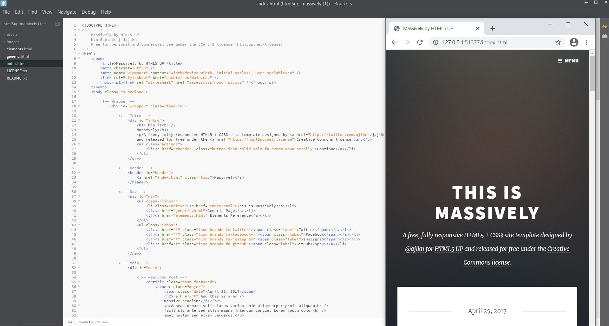
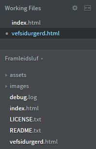
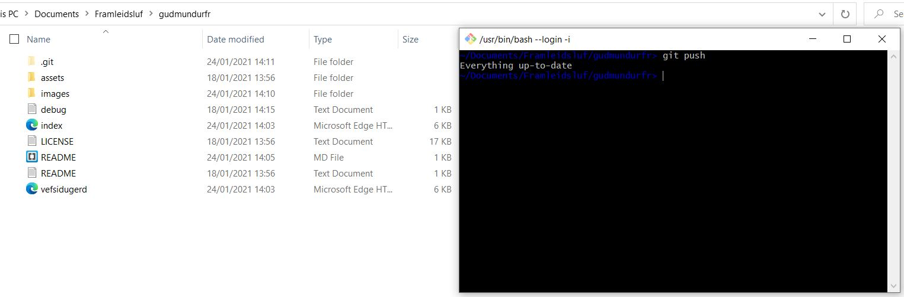
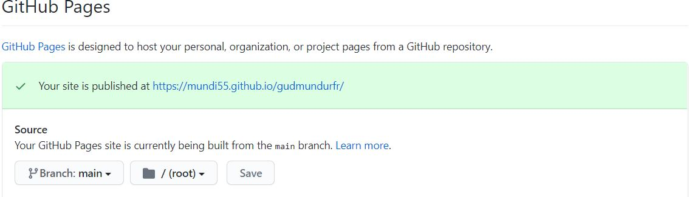
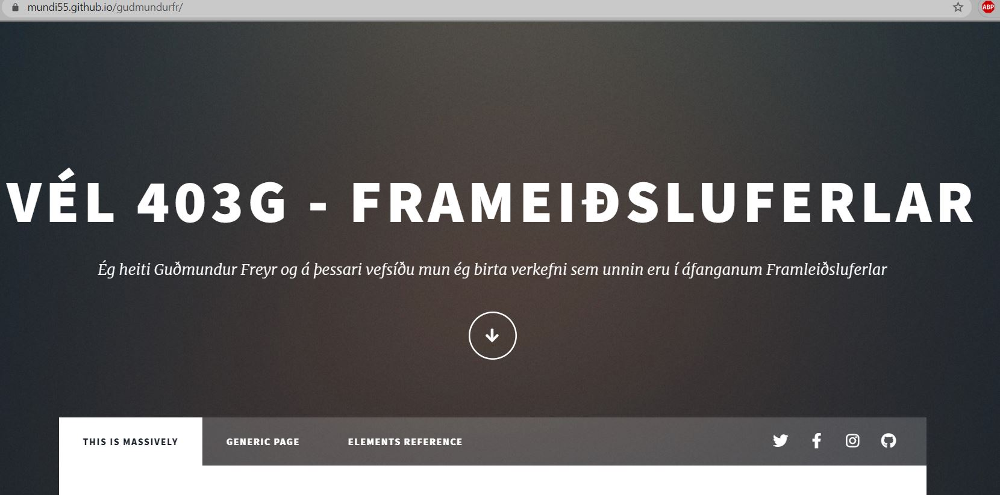
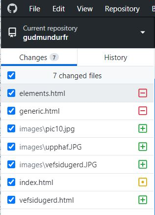

Vefsíðugerð
Hér getið þið séð hvernig ég smíðaði þessa vefsíðu.
Ég hef enga reynslu af því að vinna með html og var því það fyrsta sem ég gerði að kynna mér málið. Ég horfði á myndböndin á Youtube frá áfanganum sem komu sér vel. Einnig sótti ég mér frekari upplýsingar inná vefsíðunni https://www.w3schools.com/en þar er hægt að sækja sér mikinn fróðleik um html og mörg önnur forritunarmál. Því næst náði ég í forrit sem heitir Brackets og notaði ég það við skrif og prófun á html kóðanum fyrir vefsíðuna. Ég byrjaði þó ekki alveg sjálfur frá grunni þar sem ég fékk afnot af sniðmáti frá vefsíðunni
https://www.w3schools.com/ og hér getið þið séð sniðmátið sem ég notaði. Ég náði svo í Git á tölvuna mína þar sem ég ætlaði mér að hýsa síðuna í gegnum Github aðganginn minn. Með Git get ég stöðugt uppfært vefsíðuna og nota ég til þess 'repository' á Github sem ég nota svo Git til þess að ýta nýjum breytingum inn í 'repository' og þannig uppfærist síðan. Það er því ekkert mál að uppfæra síðuna og stöðugt breyta henni þegar ég mun skjala fleiri verkefni sem ég vinn í áfanganum.
Þegar ég hafði hlaðið niður sniðmátinu opnaði ég það í Brackets og notaði 'live preview' takkann til að sjá hvernig hún leit út. Næst hófst ég svo handa við að breyta síðunni svo hún myndi henta mér betur. Ég breytti index síðunni nokkuð mikið en breytingin fólst aðallega í því að taka út hluti sem ég hafði ekki not fyrir og breyta textanum. Svo bjó ég til nýja síðu sem hét vefsidugerd.html og hófst handa við að skjala ferlið við vefsíðugerðina. Þá voru skrárnar komnar í aðra möppu og þá leit þetta svona út. Ég gerði reyndar stafsetningarvillu þegar ég skírði html skjalið og fékk það því að heita vefsidurgerd.html í smá tíma. Ég breytti því þó nokkru seinna.

Nú var mér farið að líka vel við útlitið og næst vildi ég því birta síðuna mína á netinu. Þá fór ég í möppuna mína, hægri smellti og valdi 'Git Bash Here'. Þá kemur upp þessi skjámynd sem sést á myndinni hér fyrir neðan. Svo opna ég GitHub aðganginn minn og bý til nýtt 'repository' og afrita svo upplýsingarnar þaðan inn í Git gluggann. Loks lítur það einhvern veginn svona út, hér 'pusha' ég svo nýjustu útgáfunni inn í 'repository' og sé að allt er uppfært.

Svo fer í í stillingarnar inná GitHub fyrir þetta 'repository' og vel að birta síðuna með aðstoð GitHub Pages.

Nú hélt ég að allt væri komið í rétt horf en sú var raunin ekki. Af einhverjum ástæðum hlóðust ekki réttar skrár inn á GitHub og vefsíðan varð því ekki eins og hún leit út í Brackets hjá mér. Ég er enn ekki alveg viss hvað fór úrskeiðis en hér getið þið séð hvaða skjöl hlóðust upphafhlega upp.

Hér vantar flestar breytingarnar sem ég gerði við sniðmátið og vantar alla síðuna mína um skjölun á vefsíðugerðinni. Hér gat ég loks leyst vandann með því að nota GitHub Desktop forritið sem ég var með á tölvunni minni og þaðan gat ég valið rétta möppu til þess að hlaða upp í rétt 'repository'. Næst getum við svo séð þær breytingar sem áttu sér stað þegar ég uppfærði möppuna með GitHub Desktop.

Nú var allt komið á flug og síðan aðgengileg á netinu. Svo get ég haldið áfram að uppfæra html skrárnar mínar með aðstoð Brackets og ýtt uppfærðum skjölum í rétt 'repository' með aðstoð GitHub Desktop. Ef þið hafið áhuga á að skoða mitt 'repository' sem síðan byggir á getið þið ýtt á GitHub takkann hér neðst á síðunni og hann fer með ykkur á GitHub aðganginn minn.